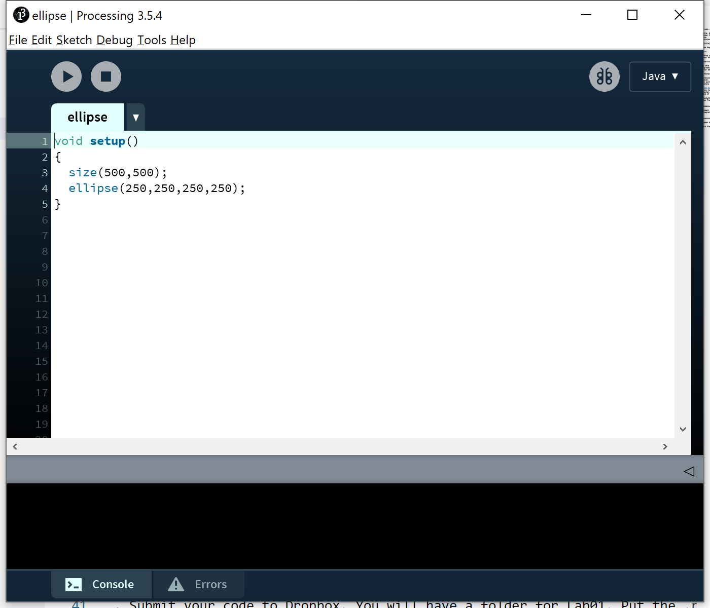
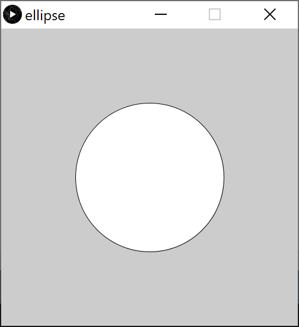

Assignment 0: Hello CS110!
Due Friday, September 11, before midnight
The goals for this assignment are:
-
Sign-up for dropbox
-
Try slack
-
Look at the website!
-
Installing Processing
-
Write a simple Processing program
1. Sign-up for Dropbox
Please go to dropbox.com and register. You will be using dropbox to submit your assignments.
Create a dropbox account and send an e-mail to the instructor (anormoyle at brynmawr.edu) with the e-mail used for dropbox account. You will then get an invite to share a folder for all your submissions.
2. Try slack
I will be inviting you all to join the course slack channel. In the introduction channel, say and introduce yourself:
-
What is your preferred name and pronouns?
-
Tell us your favorite food. :)
3. Read the class web pages
Start by reading through all of the class webpage! Bookmark this page on your browser, or use some other method that helps you keep this information handy. All course materials and announcements will be posted on the course webpage!
Pay special attention to the Schedule.
4. Processing
This class will teach the fundamentals of programming using Processing. Processing is based on Java and is specialized for creating beautiful images and animations.
Processing is already setup in the computer labs in Park 230 and 231. However, everyone should also install it on their own personal computer. This will give all students the flexibility to work either on campus or remotely as needed.
If you do not have access to a personal computer, I will help you obtain one to use for the semester. Please email me (anormoyle at byrnmawr.edu) or ping me on Slack if you need help.
-
Do the Processing tutorial: Getting started.
-
Try creating a new sketch which executes the following program. We will learn how these programs work during the semester. 
-
Run the program by clicking the play button in the top, left corner 
-
Save your program (in processing, programs are called sketches). From the menu, choose File → Save. I recommend you create a directory on your computer to keep track of all your CS110 work for the term. We will cover a lot of examples!